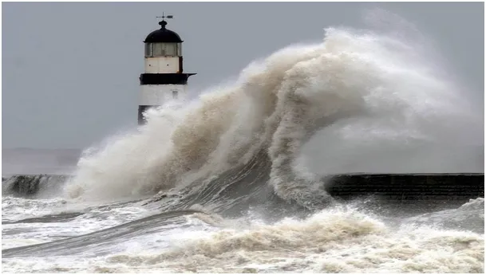
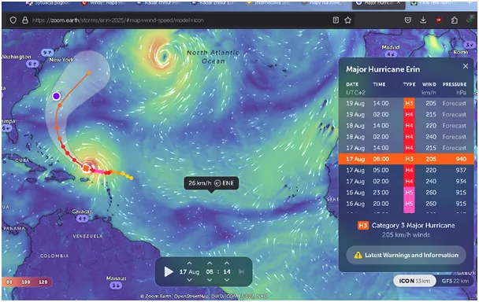
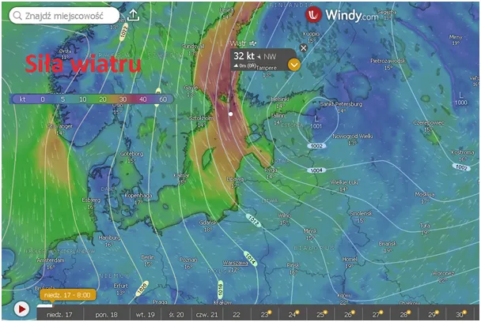
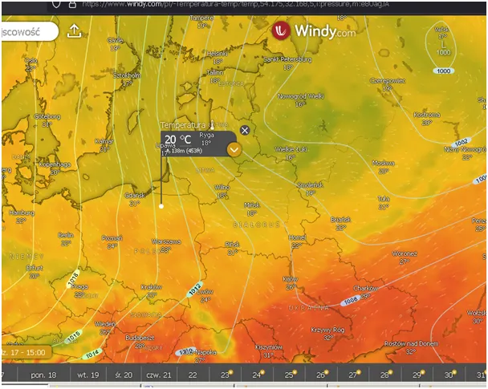

Co robi Huragan Erin i dlaczego Ziemia nie może się przegrzać.
Huragan Erin na Atlantyku, szybko nabrał wigoru i rozkręcił się do klasy H5 a wiatr w jego otoczeniu dochodzi do 260 km/h. Wir ściąga z ponad 10 km bardzo zimne powietrze, wzburza ocean mieszając jego wody, czyli robi, co ma robić, chłodzi Ziemię.

Atmosfera Ziemi jest mechanizmem samosterującym się, w jej logice jest wpleciony mechanizm ujemnego sprzężenia zwrotnego. Na czym to polega? Automatyka opisuje dwa typy systemów ze sprzężeniem zwrotnym. Sam mechanizm sprzężenia zwrotnego to system, w którym efekt procesu wpływa na przyczynę danego procesu. Sprzężenia zwrotne mogą być dodatnie i ujemne. Dodatnie sprzężenia zwrotne mamy, gdy efekt danego procesu dodaje się do jego przyczyny to sam proces zachodzi coraz dynamiczniej. Analogią jest pożar stodoły, początkowo mały płomień zapałki podpala kilka źdźbeł, energia wynikająca z ich spalania pozwala zapalić więcej źdźbeł. Szybko widzimy łańcuchową reakcję, gdzie płoną miliony źdźbeł razem ze stodołą.

Odmiennym układem jest układ o ujemnym sprzężeniu zwrotnym, takim jest właśnie ziemska atmosfera. Gdy oceany ziemi, a to one przechowują najwięcej energii cieplnej Ziemi, nagrzeją się ponad miarę , produkują dużo chmur, chmury te odbijają w okolicach równikowych w Kosmos energię słoneczną, jedyne źródło ciepła na Ziemi. Wtedy planeta stygnie, bo prądy morskie transportują ciepło w okolice biegunów, skąd bezpowrotnie jest ono emitowane w Kosmos. Mimo, że od 30 lat rejestrowany jest spadek dynamiki tego mechanizmu to kapłani religii klimatycznej zaprzeczają obserwacji i twierdzą, że płoniemy jak stodoła i proces ten będzie się nasilać. Dwutlenek węgla w tym procesie nie ma żadnego istotnego znaczenia, bo zjawisko to w ponad 95% generuje para wodna jako główny gaz cieplarniany. Gdyby ziemska atmosfera była układem ze sprzężeniem zwrotnym dodatnim zagotowałaby się już miliony lat temu nie czekając na pojawienie się człowieka.

Gdy rozkoszujemy się latem stosunkowo ciepłe wody Morza Barentsa na północ od Finlandii uformowały niż, który radykalnie zakończył lato nad północnym Bałtykiem. Teraz wieją tam huraganowe wiatry i leje deszcz. Północne wiatry spowodują, że dziś w północnej Polsce będzie już tylko 20 st. C.

Ten północny niż stonuje nam pogodę, może dać opady na północy. Huragan Erin chłodzący planetę za tydzień będzie bliżej Europy i wtedy dotrze do nas wilgotne Atlantyckie powietrze zamykając okres letni. Nikt nie wie, co będzie dalej, bo przyszłość jest nieznana z zasady i prognozy długoterminowe są banalne. Za to pewne jest, że po lecie mamy babie lato, potem złotą polską jesień itd., jak zawsze od wieków.
Więcej o huraganach : Rok 2024 zakończył się kolejnym, kiepskim wynikiem aktywności huraganów i tajfunów, co oznacza, że Ziemia stygnie. https://pawelklimczewski.pl/2025/01/05/rok-2024-zakonczyl-sie-kolejnym-kiepskim-wynikiem-aktywnosci-huraganow-i-tajfunow-co-oznacza-ze-ziemia-stygnie/
Paweł Klimczewski